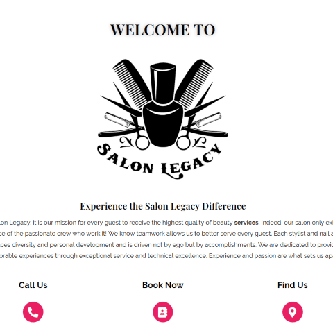

FHSU team project
In the spring 2020, I co-developed and designed a professional, user-friendly website for my Capstone Seminar in Informatics class at FHSU. I was the team leader of four students, as well as web developer, designer, client point of contact, and writer. My team built a custom website on WordPress.org for our client, Salon Legacy. We added content to showcase their talents such as their hair and nail work, a promotion salon video, and their stylists'services, pricing, headshots, bios, and contact information.
During the design phase, the other developer and I created the site wireframe using Mockflow. I created the site layout, placement of elements, and color scheme for the home page, meet the team page, individual stylist pages, and product page. Then, we set up the WordPress.org site using a basic theme. the site's top navigation menu for desktop and mobile devices. We used a black and white color scheme to reflect the salon's modern artistic vibe. I added a pop of color to accent key elements such as call-to-action buttons and add visual site dimension.
During the development phase, I set up the top navigation menu for desktop and mobile viewports. Then, I helped build the site layout and add site content. I changed the site logo from a white background and black icons and text to a black background with white icons and text. I used Photoshop to modify the clients' logo and some image backgrounds. This helped the logo blend seamlessly into the site banner and provide focus to the stylists' headshots. I customized the WordPress theme using my skills in HTML5, CSS3, JavaScript, and responsive design.
Aside from building and designing, I also assisted with site testing. Specifically, I ensured the site was responsive on desktop, tablet, and mobile viewports. I tested the site with Lighthouse to see how the site performed. My team conducted a simple usability test to ensure our site worked as intended. I recorded a YouTube tutorial video to show our eight users how to login to our WordPress dashboard and view the site. Also, I wrote up a usability test script for our testing. Indeed, this testing proved useful as it provided valuable feedback on how to improve the site's usability, functionality, and design.
To ensure Salon Legacy would continue to grow its clientele base and online presence, I verified the site with Google Search Console and Google Analytics. I added meta description tags to the site's pages. This would help improve the site's SEO score with search engines. I used the Yoast SEO plugin to measure each page's SEO and readability score.